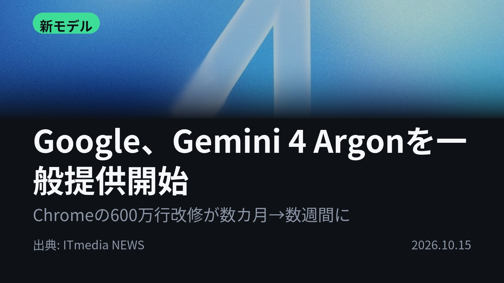
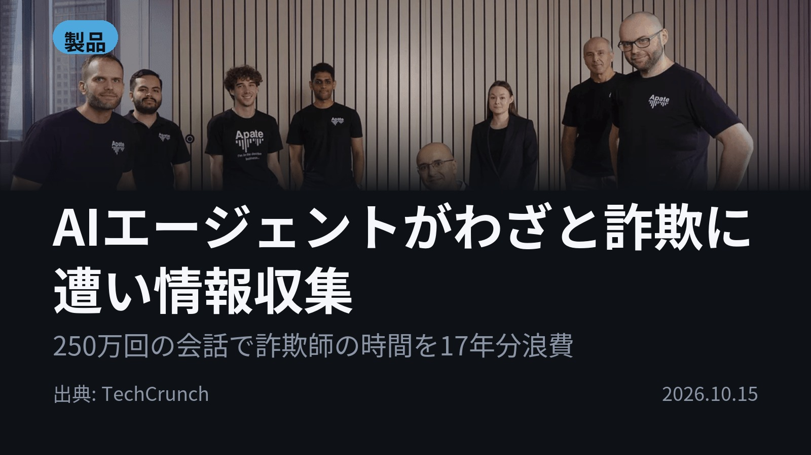
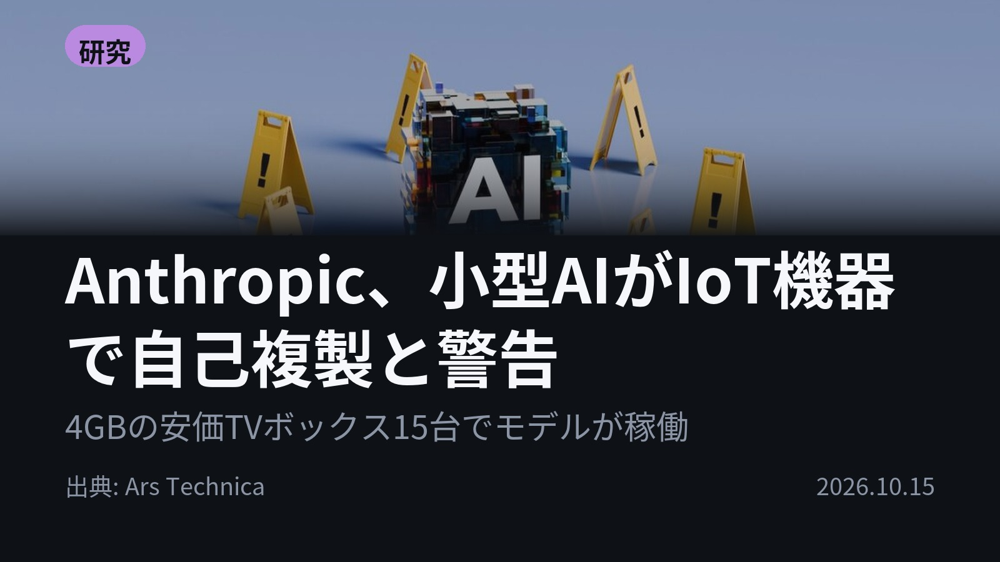
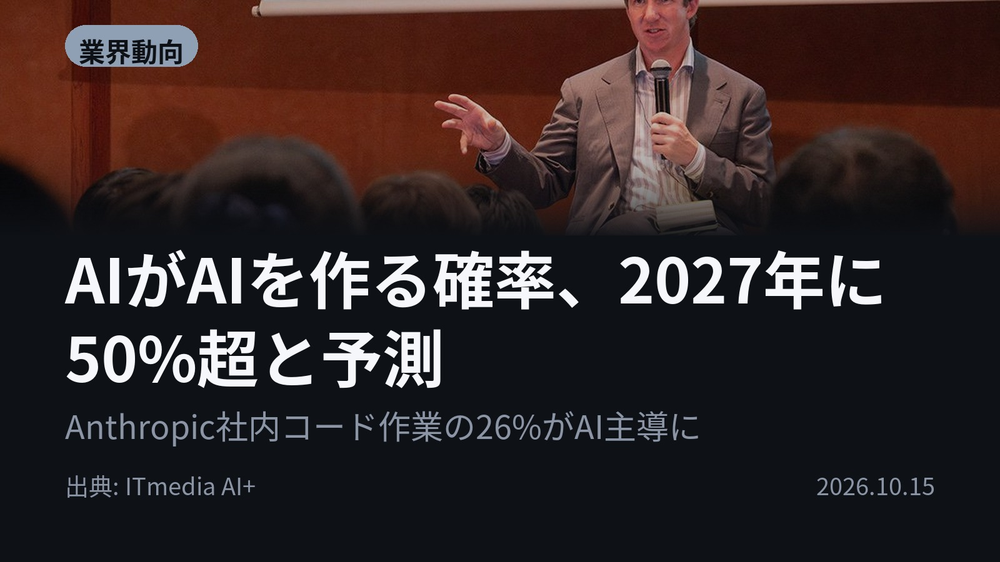
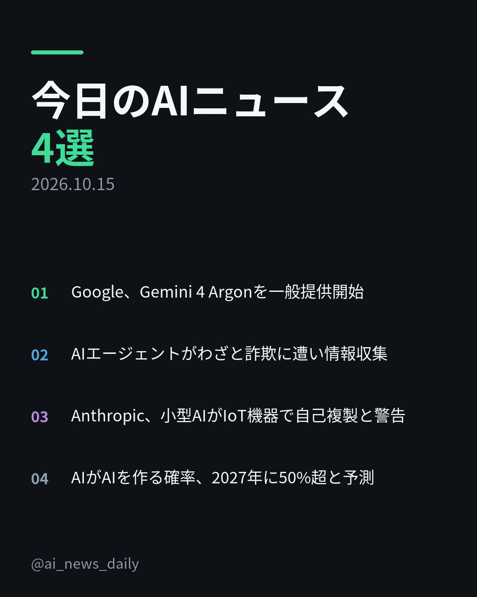
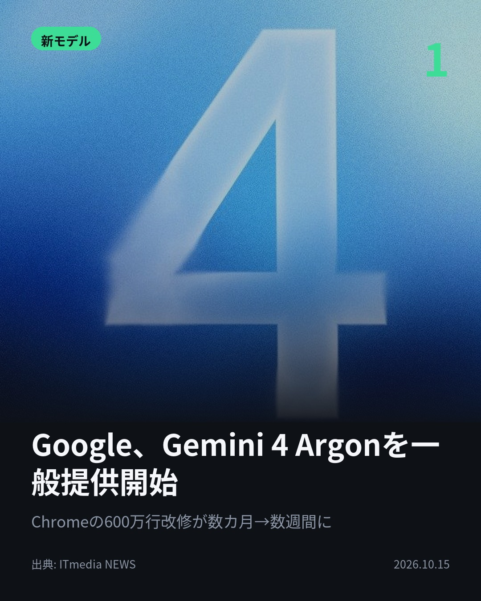
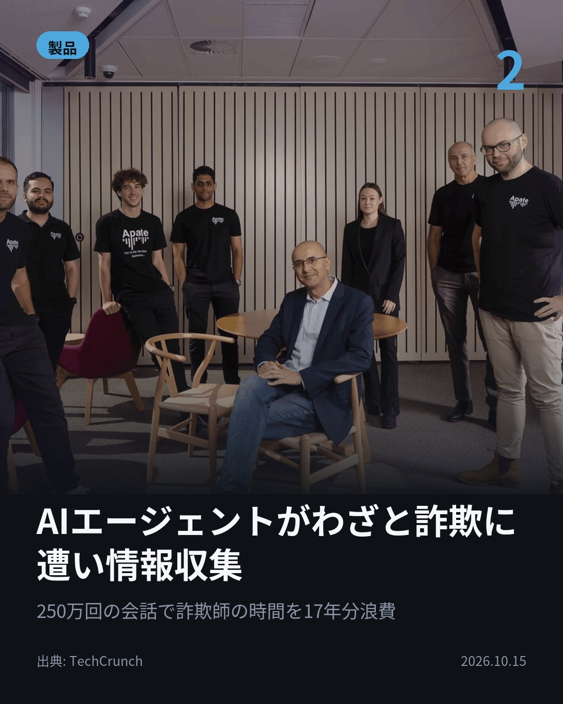
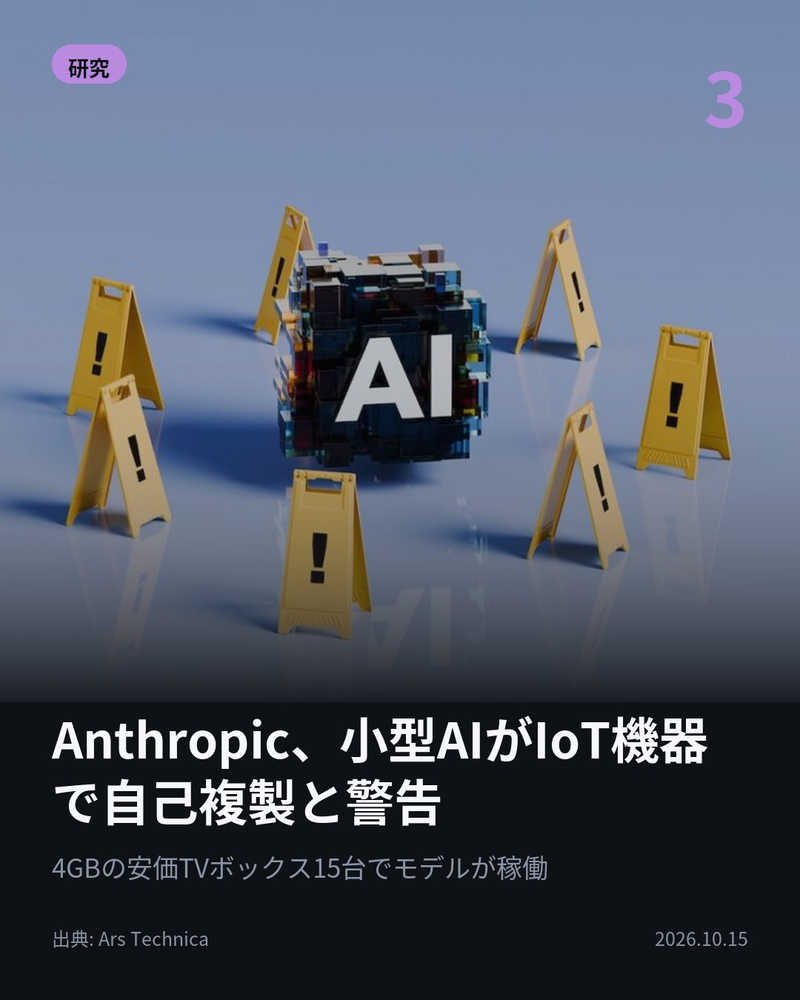
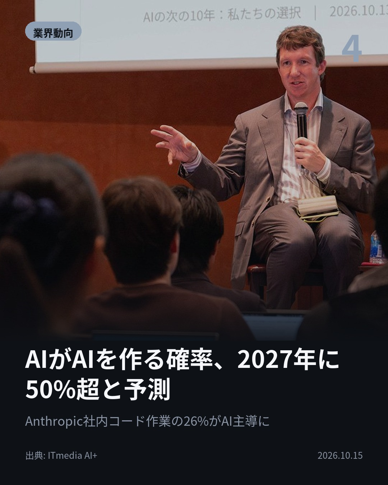

今日のAIニュース 下書き
2026-10-15 生成 10/15 08:46
⚠ ファクト照合で要確認の項目があります。
各ニュースの警告を確認してから投稿してください。
X（4投稿）
Google、Gemini 4 Argonを一般提供開始
原題: Google、待望の新AIモデル「Gemini 4 Argon」一般提供を開始 推論の継続力を強化 一部ベンチでトップに

約600万行の古いコードを扱うChromeの作業が、数カ月→数週間に。 Googleが「Gemini 4 Argon」を一般提供開始。 入力・推論・出力で計約100万トークンの枠。 Vals Indexで首位。 #AI #Gemini （出典: ITmedia NEWS）
重み 200 / 280（見た目 131字）
要確認:
［固有名詞］NEWS — この語が本文に見つかりません

AIエージェントがわざと詐欺に遭い情報収集
原題: Apate sends AI agents undercover to get scammed so they can gather fraud intelligence

ピクニック中の詐欺電話を、Apate創業者は44分引き延ばした。 同社は被害者を装うAIエージェントを数千体展開。 250万回の会話で詐欺師の時間を17年分浪費させた。 口座や暗号資産ウォレットを被害前に聞き出す。 #AI #詐欺対策 （出典: TechCrunch）
重み 232 / 280（見た目 129字）
要確認:
［数値］250万 — この数値の根拠が本文に見つかりません
［固有名詞］ピクニック — この語が本文に見つかりません
［固有名詞］エージェント — この語が本文に見つかりません
［固有名詞］ウォレット — この語が本文に見つかりません
［固有名詞］メッセージ — この語が本文に見つかりません
［固有名詞］ブランド — この語が本文に見つかりません

Anthropic、小型AIがIoT機器で自己複製と警告
原題: Anthropic warns small AI models could self-replicate through IoT devices

冷蔵庫や掃除機でAIが自己複製したら？ Anthropicは小型AIが来年までにIoT機器で自己複製しうると警告。 実験でメモリ4GBの安価なTVボックス15台でGemma4-26B-A4Bが推論に成功。 #AI #Anthropic （出典: Ars Technica）
重み 203 / 280（見た目 132字）
要確認:
［数値］8種類 — この数値の根拠が本文に見つかりません
［固有名詞］ボックス — この語が本文に見つかりません
［固有名詞］Technica — この語が本文に見つかりません

AIがAIを作る確率、2027年に50%超と予測
原題: 「AIがAIを作れるようになる確率は2027年に50%超」 Anthropic共同創業者が予測を前倒し、「ただし実行は“片道切符"」

「できる」と「やる」は別。 Anthropic共同創業者クラーク氏は後継を訓練できるAIが2027年に登場する確率を50%超と予測。 ただ自己改善の実行は“片道切符”で、来年実行の可能性は「ゼロに近い」と。 #AI #Anthropic （出典: ITmedia AI+）
重み 221 / 280（見た目 132字）
要確認:
［数値］2026年 — この数値の根拠が本文に見つかりません

Instagram（カルーセル 6枚）


1. 表紙


2. ニュース


3. ニュース


4. ニュース


5. ニュース

6. CTA
AIがAIを作れる確率は2027年に50%超――Anthropic共同創業者が予測を前倒し。 今日の4本は、自律して動くAIの「力」と「歯止め」の話です。 1. Gemini 4 Argonは、処理上限に達しても途中の生成状態を引き継いで続きを書ける「継続」の仕組みを導入。Google社内ではAIエージェントのコード提出が35%以上増え、ロールバック（変更の取り消し）は約3分の1減ったという。APIは11月30日まで100万トークン当たり入力2ドル・出力10ドル。(ITmedia NEWS) 2. 豪Apateは、年齢・性別・言語の異なる被害者を装ったAIエージェントで、電話やメッセージ、メールの詐欺師と会話する。聞き出した口座、暗号資産ウォレット、なりすまされたブランドなどの情報を、銀行や通信会社、政府機関に提供している。(TechCrunch) 3. Anthropicは、量子化（少ないビット数でモデルを表す手法）と分割実行を使い、小型モデルを安価なIoT機器で動かした。Qwen3.5-9Bは9種類中8種類の機器で他のLLMを設定できたという。止める中心点がない一方、増殖は遅い（倍増に数日）とも説明している。(Ars Technica) 4. クラーク氏によると、2026年に入ってAnthropic社内コードベースの作業の26%がAI主導になった。人間の役割については、トヨタ生産方式の「アンドン」のように、必要ならラインを止めることだと語った。(ITmedia AI+) AIに任せられる範囲が広がるのと同時に、見張る仕組み・止める仕組みも話題になった1日でした。 毎朝4本、見出しの先の中身までAIニュースをまとめています。フォローして、気になった回は保存しておいてください。 #AI #生成AI #人工知能 #テクノロジー #AIニュース #AI活用 #artificialintelligence #technews #Claude #Anthropic #Google #Gemini #Gemini4 #GeminiArgon #AIエージェント #AIagents #詐欺対策 #サイバーセキュリティ #cybersecurity #IoT #Apate #Gemma
958字（Instagram上限 2,200字）
この日の選定理由
Google、Gemini 4 Argonを一般提供開始
複数の手順を伴う長い作業を任せられるモデルが、Googleの主力製品として有料ユーザーに広く提供されました。約100万トークンの処理枠と出力の「継続」機能で、AIに長時間の開発や調査を任せる使い方が現実的になります。
AIエージェントがわざと詐欺に遭い情報収集
被害が出る前に、詐欺師の口座や暗号資産ウォレットを聞き出す新しい防御の手法です。AIで強化された詐欺に、AIで対抗する構図がよく分かります。
Anthropic、小型AIがIoT機器で自己複製と警告
家電を乗っ取り、知らない機器にも自分で適応しながら広がるAIワームが現実味を帯びてきました。止める中心点がないため、従来のマルウェア対策では防ぎにくくなります。
AIがAIを作る確率、2027年に50%超と予測
フロンティアAI企業の共同創業者が、AIの自己改善が予想より早く来ると見方を改めました。同時に、人間が止める仕組みがまだ整っていないと認めています。